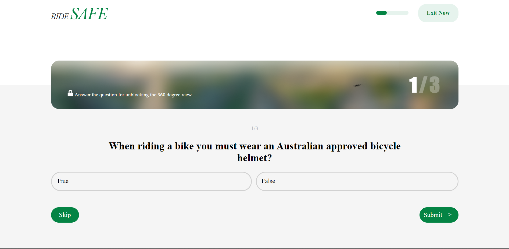
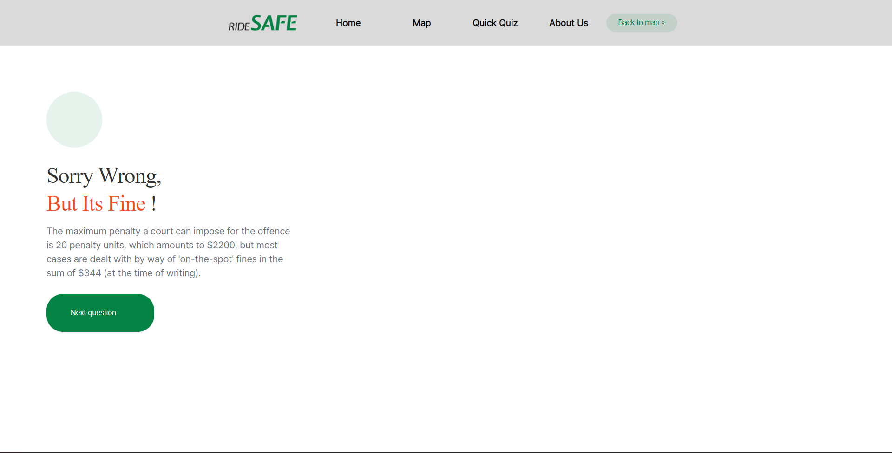

The A4 Design Computing Project was the major assessment piece for DECO1800. This assessment involved myself, with a team, making a website around a selection of Government Open-Source APIs to provide a meaningful interaction with a user. My group created RideSafe, an educational quiz game targeted at international students, teaching bike safety skills, and about a user's surrounding area.
Design Proposal
The first component of the A4 project was the Design Proposal Presentation. This component required us to introduce our team, demonstrate our research, and provide our initial ideation and prototypes on an idea we wanted to develop.
As a team we had decided that we wanted to continue on from our A3 Rapid Design Sprint idea. We wanted to develop a product quizzing users about Bike Safety, and rewarding them with information about what bike ways were in their local area.
My main contributions:
- Leadership
- PowerPoint design
- Audience and product description consolidation
- Implementation feasibility testing
As demonstrated below, whenever we had a meeting I documented everyone's responsibilities, as well as when a task was required, in order to make sure everyone was aware of their part within the project.
I feel that this was very helpful for people to look at, and assisted in organisation of the project. In the future I would like to be more specific in my task allocation, and communicate more to ensure that everyone understands the requirements of the task they have been allocated.
As mentioned above, another one of my roles, as implementation lead, was also to test the feasibility of specific parts of our designed product. It was at this point where I started to explore options for how to display the bike way sections API data on a map, with the dataset only containing street names, not coordinates. Through this process I learnt a lot about geolocation and geocoding, even though the latter was not used in our final implementation. Given the chance to complete the project again, I would make sure I look at the whole dataset prior to focussing on a specific type of implementation, as the Shapefile within the dataset proved very useful.
I was happy with our Design Proposal Presentation and the feedback we received was useful. I would have liked to have build our presentation earlier to give more time to practice it, however, the time spent on feasibility testing and API testing by Mengxuan, Alan and myself I feel was time well spent.
Work In Progress
The Work In Progress presentation was a chance to scope our implementation, prioritise elements, provide an update on our implementation progress, and map out the rest of our delivery. During this process we reflected on the feedback received so far since the previous stage, and scoped our minimum viable product, as shown below.

In the above image, the yellow dictates our planned Minimum Viable Product (MVP), orange highlights our other key elements, and green shows elements that we decided would be nice to have.
Personally, this stage heavily focussed on implementing these MVP elements, especially in regard to finding a way to display the bike way locations. By the end of this design phase we had completed our MVP
My contributions to this stage included:
- Facilitating MVP discussion
- PowerPoint documentation
- Map and home page implementation
Some periods of conflict arose when additional prototypes were created, not based on previous creations. This was especially apparent during the time in which Mengxuan, Alan and I were implementing our website based on our paper prototype, only to have Jeff create a high fidelity prototype with a different colour scheme, UI and layout. This learning experience further reinforced previously discussed elements of communication and ensuring that everyone was on the same page. I feel this was a good thing to happen however, as we were able to present this in our presentation as an alternate UI for feedback. With the positive feedback we received on this new design, we were then able to pivot our implementation, and as is discussed later, this was definitely a positive.
Despite the conflict, I feel our Work in Progress was a success. By the end of this stage we had developed a mostly working prototype, and while a couple of major bugs were still present, the concept was definitely present and well-defined
Final Delivery
Between the last presentation and the delivery of the final product at the trade-show there were not too many problems. Everyone understood their role in the final delivery, and performed it well. The main task to complete was changing the UI of the MVP to the newly designed prototype, however everyone was able to perform this quite efficiently.
Around this time, thinking we had some time to spare, I did some more ideation around making sure our product was engaging. In the end, these features were not implemented because of time constraints, however I think they are worth noting down
- More of a story-telling aspect. Telling the user they are on a journey and exploring a path
- Using more human-relatable figures (See Journal Entry 12) to elicit more emotion from the user
- Include different types of quiz questions. Create modes where users drag elements or are timed to answer a question
In this phase, my contributions were definitely spread all over the product. As the leader of the group I assisted in most of the parts of the final product at some point, however my main contributions can be seen in
- Index, Map and About Us pages development, including consistent website header
- Design of the Question, Answer and Map page interaction and GET requests
- Various coding and debugging assistance to Mengxuan, Alan and Brielle where required
- Content assistance for Jeff in our product poster
Below is a snapshot of our final product
Home Page

Map Page
About Us Page
Start Quiz Page
Question Page
Correct Answer Page
Correct Answer Page
Overall I was really happy with our final implementation. At the trade show, Brielle spoke well for our product demonstration, and we were able to provide answers to all the questions we were asked. We received good feedback from people about our UI, which showed our pivot from UI implementation was good, and those who used our product did so successfully, and seemingly without any problems.
I would have liked to present our product to more people. While I was able to engage with 4 other products in the show, not many other people came to see our product.
I don't think I would change anything that we did in this last phase of implementation. Everything went relatively smoothly.